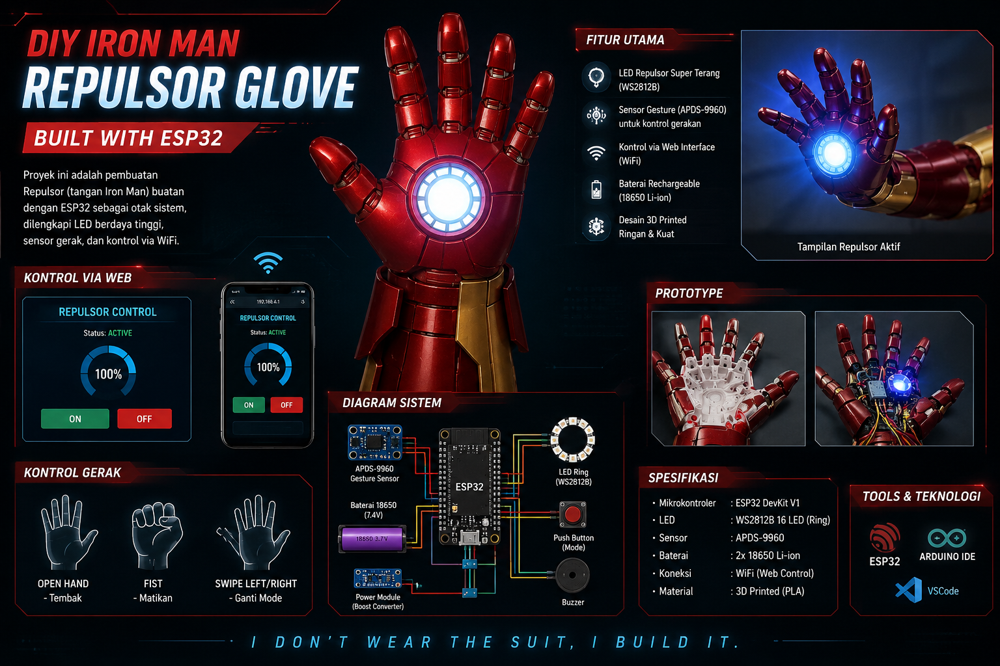
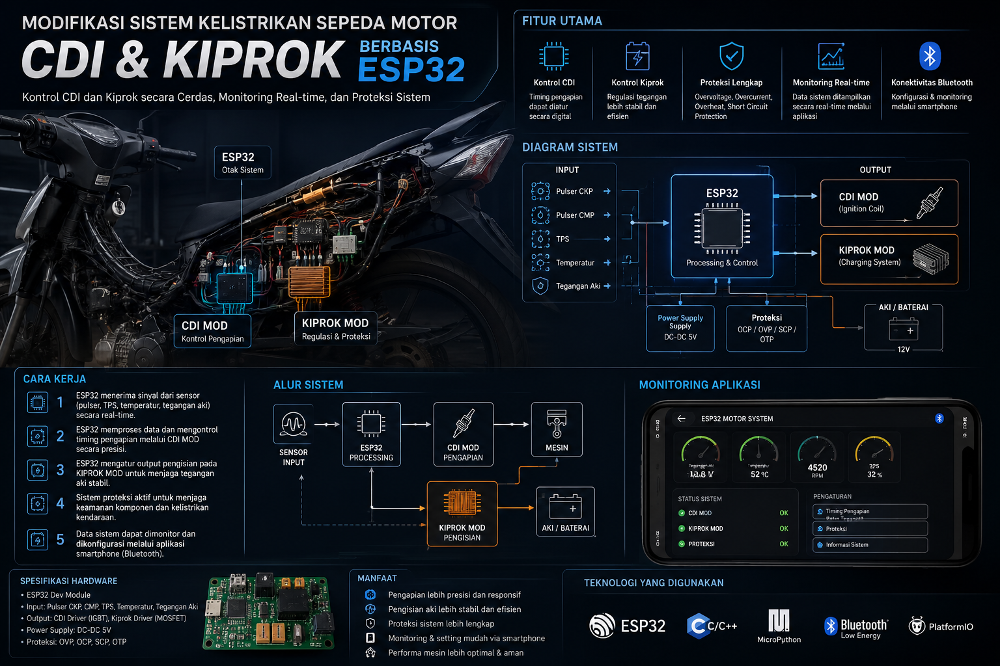

|
Project
Tahun Belajar Elektronika & Programming
Jam Eksperimen
Halo, saya Fathur Hakiki. Saya memiliki ketertarikan di bidang elektronika, IoT dan modifikasi sepeda motor. Saya senang membuat berbagai proyek berbasis NodeMCU, ESP32, Arduino, serta mempelajari sistem kelistrikan kendaraan.
Mulai mengenal Python dan dasar logika pemrograman.
Belajar HTML, CSS, JavaScript, dan PHP untuk membangun website.
Mulai mempelajari AI, prompt engineering, dan cara kerja model AI.
Fokus ke hardware: Arduino, NodeMCU, relay, dan sistem IoT.

Project ini adalah sistem tangan Iron Man (repulsor glove) berbasis ESP32 yang dirancang untuk simulasi teknologi futuristik. Sistem ini menggunakan mikrokontroler ESP32 untuk mengontrol LED repulsor, sensor (opsional), dan komunikasi nirkabel. Glove ini dapat dikembangkan untuk kontrol berbasis gesture, web control, atau sistem otomasi IoT sederhana, sehingga cocok sebagai project kombinasi antara embedded system dan creative engineering.

Project ini merupakan sistem modifikasi kelistrikan sepeda motor yang mengintegrasikan ESP32 sebagai pusat kontrol untuk mengatur CDI (pengapian) dan kiprok (pengisian aki). Sistem ini dirancang untuk meningkatkan efisiensi, stabilitas tegangan, serta keamanan kelistrikan motor dengan monitoring real-time.
Achievement & Portfolio
Sistem kontrol motor via NodeMCU